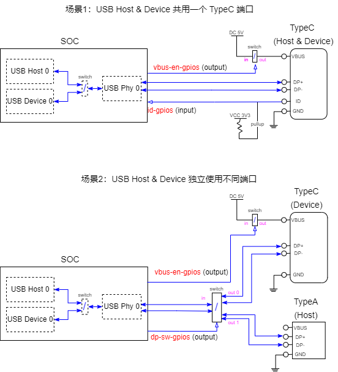

USB OTG 配置
OTG 模式配置
Auto 模式 或者 Manual 模式 ：-
Auto 模式。根据 id-pin GPIO 管脚的电平来决定当前 OTG 端口工作模式为Host/Device。配置 OTG 为 Auto 模式时，id-pin 是必须要配置的，需要配置 id-pin GPIO 的名称和极性。相关 menuconfig 配置：> Local packages options > Third-party packages options [*] CherryUSB: tiny and portable USB host/device stack for embedded system with USB IP ---> [*] Enable usb otg mode ---> Select otg switch (Auto (Id pin detect)) ---> -*- Using id-pin gpio ---> (PF.15) GPIO name Select GPIO polarity (Input value: 0 = Host, 1 = Device) ---> - OTG 工作在 Manual 模式时，由用户手工来切换 Host/Device 模式。相关
menuconfig
配置：
> Local packages options > Third-party packages options [*] CherryUSB: tiny and portable USB host/device stack for embedded system with USB IP ---> [*] Enable usb otg mode ---> Select otg switch (Manual) ---> Select default mode (Device) --->手工切换 Host/Device 模式的命令为 set_otg_mode：set_otg_mode host
Usb otg auto mode (switch usb0 to host).
set_otg_mode device
Usb otg manual mode (switch usb0 to device).
otg 节点的不同配置：| Mode | DTS otg-mode 属性 | DTS xxx-gpios 属性 | 运行时 Host / Device 切换方法 |
|---|---|---|---|
| Auto | otg-mode = "auto"; (如果没有配置
otg-mode 属性, 默认也是 Auto 模式) | id-gpios 属性必须配置。 vbus-en-gpios
和 dp-sw-gpios 属性根据硬件配置选配。 | OTG 驱动根据 id-gpios 管脚的电平变化 自动切换 USB 工作模式为
Host / Device。 |
| Force | otg-mode = "device"; 或者 otg-mode =
"host"; | id-gpios 属性不需要配置。 vbus-en-gpios
和 dp-sw-gpios 属性根据硬件配置选配。 | 需要配置文件节点来手工切换： echo devices >
/sys/devices/platform/soc/soc\:usb-otg/otg_mode 或者
echo host >
/sys/devices/platform/soc/soc\:usb-otg/otg_mode |
OTG 相关 GPIO
从上面配置可以看到和 OTG 功能相关的 GPIO 管脚有 3 个：
-
id-gpios。用来检测当前插入的是不是 OTG 线，如果为 OTG 线则需要把本机切换到 USB Host 模式，否则本机切换到 USB Device 模式。该管脚在Auto 模式模式下是必须配置的，如果缺少该管脚 OTG 只能工作在Manual模式手工进行切换。 -
vbus-en-gpios。该管脚是用来控制 VBUS 的 5V 输出的，通常情况下：切换到 USB Host 模式时需要使能本机端的 VBUS 5V 输出给对端 Device 供电，切换到 USB Device 模式时需要关闭本机端的 VBUS 5V 输出转而对端 Host 的供电。（实际使用上来说，不论本端是 Host/Device 模式，也可以在 VBUS 上一直供电 5V 两边 VBUS 无压差则无漏电，这种情况下vbus-en-gpios无需配置。） -
dp-sw-gpios。该管脚是在 OTG 外出两个独立 Host、Device 端口时，用来控制外部 Switch 的。非该模式时，dp-sw-gpios无需配置。
3 个 GPIO 管脚的具体使用场景如上图所示，用户根据自己的使用场景来选择配置哪些 GPIO。每个 GPIO 的 输入输出正反电平有效，可以通过 menuconfig 菜单中的 GPIO polarity 选项来配置。：
USB Host/Device 配置
Local packages options
> Third-party packages options
[*] CherryUSB: tiny and portable USB host/device stack for embedded system with USB IP --->
[*] Enable usb otg mode --->
[*] Enable usb device mode --->
[*] Enable usb msc device --->
Use ram or storage template (msc ram) --->
[*] Enable usb host mode --->
[*] Enable usb msc driver --->
[*] Use msc template